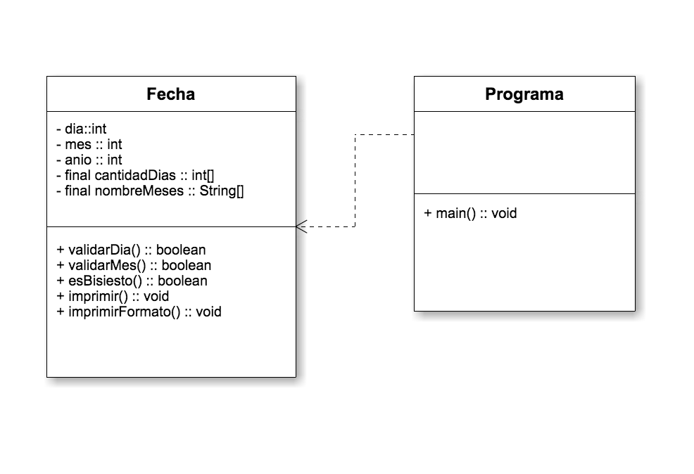

Ejercicio
Crear la Clase Fecha la cual tendrá como atributos : día , mes y año.
- Debe crear dos constructores uno que por defecto inicialice el día en 23, el mes en 5 y el año en 1995.
- El segundo constructor debera permitir ingresar el dia, mes y año.
- Usar getters y Setter para cada atributo de la clase.
- Crear un método que permita validar si el dia es correcto, considerando que límite de días depende del mes {31,28,31,30,31,30,31,31,30,31,30,31}, ademas si el año es bisiesto el mes de febrero puede tener 29 días.
- Crear un método que permita validar si el mes es correcto, considere que los meses pueden ser entre 1 y 12. Este método debe retorna un booleano
- Crear el método para verificar si el año es bisiesto, método debe retorna un booleano.
- Crear un método que permita imprimir la fecha con el siguiente formato dd-mm-aaaa
- Crear un método que permita imprimir la fecha con el siguiente formato 23 de mayo de 1995.
Diagrama de Clases
Links
The dreams of yesterday are the hopes of today and the reality of tomorrow. Science has not yet mastered prophecy. We predict too much for the next year and yet far too little for the next ten.